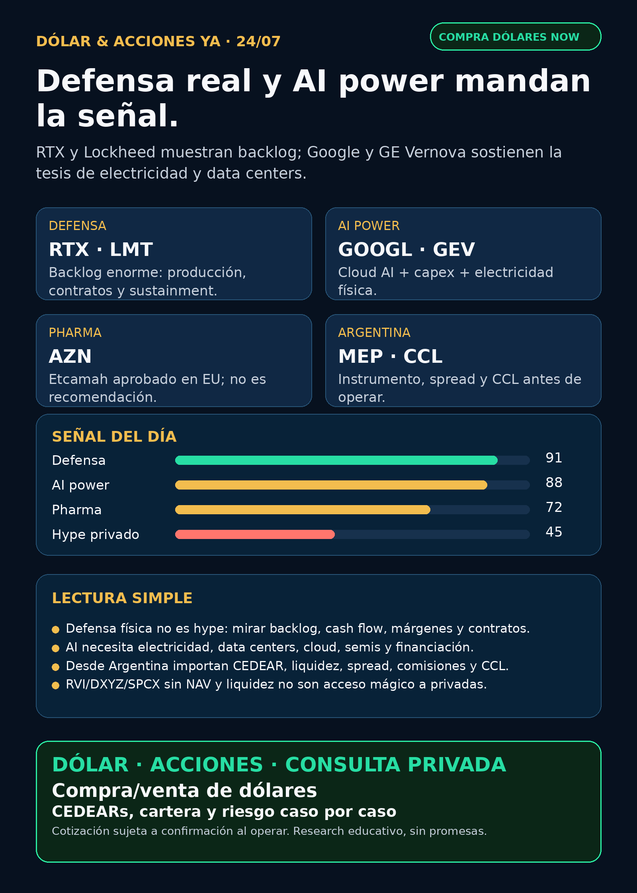

Defensa real y AI power.
RTX y Lockheed muestran backlog; Google y GE Vernova sostienen la tesis de cloud, data centers y electricidad física. AstraZeneca suma pharma verificable.
Texto WhatsApp
Placa del día

Dólar & Acciones YA — Stock Radar — 24/07
Lectura simple del día
Hoy el radar no está diciendo “comprá defensa” ni “comprá AI”. Está marcando algo más útil: la inversión en inteligencia artificial y seguridad física se está yendo al mundo real: turbinas, data centers, radares, motores, misiles, satélites, energía, permisos y caja.
En criollo: una buena empresa no siempre es una buena inversión al precio de hoy; y una acción afuera no siempre es un buen instrumento para Argentina. Antes de mover plata real hay que mirar precio, liquidez, spread, CCL/MEP, comisiones, tamaño de posición y horizonte.
Tesis central
La señal fuerte de las últimas 24–72 horas es doble:
- **Defensa/aeroespacial física se fortaleció:** RTX y Lockheed Martin reportaron resultados y backlog enormes con fuente SEC. Esto no es una historia de “AI software”; es presupuesto, producción, sustainment, motores, radares, interceptores y contratos largos.
- **AI power sigue vigente:** Alphabet confirma que Google Cloud y la infraestructura AI son negocio y capex; GE Vernova sigue mostrando que electricidad física, turbinas y electrificación son cuello de botella de los data centers.
Ordenado por valor educativo/señal de radar, no por recomendación de compra.
Ranking educativo por calidad de tesis
1. Defensa física / aerospace industrial — señal fortalecida
- **RTX (
RTX)**: reportó Q2 2026 con adjusted sales de **USD 24.100 millones**, adjusted EPS de **USD 1,89**, operating cash flow de **USD 3.500 millones**, free cash flow de **USD 2.900 millones** y backlog total de **USD 289.000 millones**, dividido en **USD 170.000 millones comercial** y **USD 119.000 millones defensa**. También elevó outlook 2026 de adjusted sales, EPS y free cash flow. Fuente: SEC 8-K Exhibit 99, 23/07/2026: https://www.sec.gov/Archives/edgar/data/101829/000010182926000025/a2026-07x238xkerexhibit99.htm - **Lockheed Martin (
LMT)**: reportó ventas Q2 de **USD 20.100 millones (+11%)**, net earnings **USD 1.800 millones**, free cash flow **USD 2.900 millones** y backlog récord de **USD 230.000 millones**, incluyendo contrato multi-año para producir interceptores THAAD. Fuente: SEC 8-K Exhibit 99.1, 23/07/2026: https://www.sec.gov/Archives/edgar/data/936468/000162828026049277/ex991q22026.htm - **Lectura:** defensa no queda limitada a drones high-beta. Hay primes con backlog, contratos, producción y servicios. Riesgo: valuación, márgenes, execution risk, dependencia presupuestaria y geopolítica.
- **Accionabilidad:** internacional/global vía tickers USA; Argentina/CEDEAR/liquidez no verificado en esta corrida. Si existe CEDEAR, igual hay que mirar ratio, spread, CCL implícito y volumen local.
2. AI power / data centers — tesis estructural vigente
- **Alphabet (
GOOGL/GOOG)**: el 10-Q confirma que Google Cloud incluye enterprise AI infrastructure, Vertex AI y Gemini Enterprise. También confirma que proceeds de financiación se usan para fines generales, incluyendo **capital expenditures to scale AI infrastructure and global compute**. Fuente: SEC 10-Q, filing 23/07/2026: https://www.sec.gov/Archives/edgar/data/1652044/000165204426000071/goog-20260630.htm - **GE Vernova (
GEV)**: señal de la corrida previa que sigue siendo central: órdenes Q2 **USD 24.200 millones**, backlog **USD 176.000 millones**, Gas Power equipment backlog + slot reservations de 100 a 116 GW, y data-center orders en Electrification por más de **USD 5.000 millones YTD**. Fuente: SEC 8-K Exhibit 99, 22/07/2026: https://www.sec.gov/Archives/edgar/data/1996810/000199681026000147/gevpressrelease2q26.htm - **Lectura:** el segundo peaje de la AI es electricidad física: generación, transmisión, subestaciones, transformadores, switchgear, cooling y financiación.
- **Accionabilidad:** `GOOGL/GOOG` y
GEVson globales; capa local Argentina requiere revisar CEDEARs, spreads y CCL. Proxies locales imperfectos: YPF, Pampa, TGS, Central Puerto u otras energéticas, pero no son lo mismo que power hardware global.
3. Pharma/salud — señal verificable, no hype
- **AstraZeneca (
AZN)**: Etcamah / camizestrant fue aprobado en la Unión Europea en combinación con CDK4/6 inhibitor para primera línea de breast cancer ER-positive/HER2-negative locally advanced or metastatic. Fuente: SEC 6-K, 23/07/2026: https://www.sec.gov/Archives/edgar/data/901832/000165495426006803/a5622n.htm - **LLY / GLP-1 / retatrutide:** Google News trajo titulares sobre nuevos datos y futura búsqueda de aprobación, pero sin fuente primaria Lilly/FDA verificada en esta corrida. Estado correcto: **discovery / auditar primaria**, no titular cerrado.
- **Lectura:** pharma puede generar señales enormes, pero hay que separar aprobación real, Fast Track, ensayo clínico, marketing y nota reciclada.
- **Accionabilidad:** global/USA según broker; Argentina local requiere CEDEAR o instrumento disponible. Biotech chica = riesgo binario.
4. Tesla / physical AI — seguimiento con riesgo
- **Tesla (
TSLA)**: el 10-Q confirma foco en FSD, futuras capacidades autónomas vía Robotaxi/Cybercab, batería, AI compute e infraestructura global; también muestra capex de **USD 8.280 millones** en el semestre, contra **USD 3.890 millones** en el mismo período anterior. Fuente: SEC 10-Q, 23/07/2026: https://www.sec.gov/Archives/edgar/data/1318605/000162828026049270/tsla-20260630.htm - **Lectura:** autonomía y robotaxi son radar; el freno es caja, capex, permisos, safety y ejecución.
- **Accionabilidad:** global/CEDEAR probable, pero no verificado hoy. No es compra automática por narrativa.
Watchlist priorizada de hoy
- **RTX / LMT:** señal fortalecida en defensa física por resultados/backlog. Riesgo: precio de entrada, márgenes, supply chain y política.
- **GEV / GOOGL:** AI power + cloud infrastructure siguen como tesis estructural. Riesgo: capex, competencia, regulación eléctrica y timing de órdenes.
- **TSLA:** radar de autonomy/energy storage; riesgo alto por capex y ejecución.
- **AZN:** pharma verificable por aprobación EU de Etcamah; seguir impacto comercial y revisión USA si aparece fuente primaria.
- **RKLB:** RSS trajo “hasta USD 300 millones / USD 266 millones”, pero no apareció primaria Rocket Lab/DoD/SEC nueva. Estado: **auditar antes de elevar**.
- **NVDA:** sin filing operativo nuevo superior; se mantiene thesis AI infra/Nebius/ecosystem ya indexada.
- **PLTR:** ruido de precio/contratos; sin primaria material nueva.
- **TSM / ASML / MU / AVGO:** AI semis vigentes; sin nueva primaria más fuerte que earnings/capex recientes.
- **HOOD / RVI:** RVI Schedule 13G/A muestra Robinhood Markets con **13.345.669 shares** y **48,98%** de la clase al 30/06/2026. Fuente: SEC Schedule 13G/A, filed 23/07/2026: https://www.sec.gov/Archives/edgar/data/2085091/000095010326011121/xslSCHEDULE_13G_X02/primary_doc.xml. Estado: wrapper privado, mirar NAV/premium/liquidez/sponsor sales.
- **Gold / GLD / GOLD / B:** instrumento ambiguo; no reportar precio hasta confirmar si es ETF oro, Barrick u otro activo.
Portfolio/base Mi Simulación
La cartera de Ricardo fue liquidada, devuelta y terminada según estado vigente del 24/06. No hay P&L activo que reportar. Esta sección queda como vigilancia para una próxima compra o nuevo inversor, no como rendimiento de cartera real.
Capa Argentina: dólar, CEDEARs e instrumento
- BlueLytics actualizó a las 08:45 -03: oficial venta **$1.511**, blue venta **$1.555**.
- CriptoYa mostró oficial ask **$1.510**, blue ask **$1.560** y USDT ask **$1.583,79** cerca de las 08:46 -03.
- MEP AL30 **$1.515,64** y CCL AL30 **$1.611,62** venían con timestamp de cierre previo, 23/07 16:59 -03. Para ejecutar: broker vivo, no snapshot.
- Para un lector argentino: CEDEAR ≠ acción USA. Importan ratio, spread, volumen, CCL implícito, comisiones, parking cuando aplique y tamaño de posición.
Energía
- Señal fuerte vigente:
GEV+ demanda de Google/AI compute. - Energía Argentina revisada:
YPFyPAM/PAMPmantienen eventos RIGI/split/recompras de días previos; sin primaria nueva más fuerte esta madrugada. Mantener en radar educativo por Vaca Muerta, gas, power y exportaciones. - Power hardware revisado: Hitachi Energy, Siemens Energy, HD Hyundai Electric, Hyosung/HICO, Virginia Transformer y Delta Star. Sin primaria fresca comparable a
GEV; Corea/OTC/privadas no se venden como acceso fácil para Argentina.
Pharma/salud
AZN: Etcamah aprobado en EU, verificado por SEC 6-K.- `LLY`: retatrutide aparece en fuentes secundarias; falta primaria final para convertirlo en claim público fuerte.
- `NVO`, `MRK`, `PFE`: revisados; sin señal fresca superior en esta corrida.
Radar amplio fuera de watchlist
- **Defensa/aeroespacial:**
RTX,LMT,NOC,AVAVrevisados. RTX/LMT son la señal fresca fuerte; AVAV/NOC quedan como tesis vigentes de la edición previa. - **Space/orbital AI:**
RKLBySPCXrevisados. RKLB con discovery secundario no verificado; SPCX/SpaceX con titulares de stakes/earnings pero sin filing nuevo material en esta corrida. - **Autonomous mobility / physical AI:**
TSLA, Waymo/Alphabet, Uber/Zoox/Joby revisados por discovery; la señal verificable del día es Tesla filing/Q2. - **Crypto gobernado / rails:** sin señal nueva superior a Robinhood Chain/Stock Tokens/Agentic Accounts ya indexados. Memecoins/agentic tokens quedan fuera.
- **Private wrappers:** RVI/DXYZ/VCX/ARKVX requieren holdings, NAV, premium/descuento, sponsor sales, liquidez y acceso antes de usarlos como “proxy” de privadas.
Red flags / hype para ignorar
- “Hasta USD 300 millones para Rocket Lab” sin primaria nueva usable: **auditar**.
- “Lilly ya aprobado” si sólo viene de notas sobre datos/futura FDA: **no confundir ensayo con aprobación**.
- “SpaceX/SPCX stake/earnings” desde titulares sin filing: **audit-only**.
- “RVI/DXYZ/VCX = acceso limpio a SpaceX/OpenAI/Anthropic”: falso si no hay NAV, premium, holdings y liquidez.
- CEDEAR con spread alto o poca rueda: puede arruinar una tesis buena.
Qué mirar después
- Si aparecen primarias Rocket Lab/DoD para el contrato RKLB.
- Si Lilly publica release/FDA package real de retatrutide.
- Próximos filings de
GEV, utilities y power hardware por data-center orders. - CEDEARs/liquidez local de defensa y AI power si Charly quiere armar cartera Argentina.
- MEP/CCL vivo antes de hablar de ejecución real.
Recibo visible de cobertura
Revisado: watchlist base, AI infra/semis, energéticas argentinas, pharma/GLP-1/oncology, defensa/aeroespacial, space/private wrappers, autonomía/physical AI, fintech/AI agents, power hardware/transformadores y crypto gobernado. Si un carril no aparece arriba, fue porque no tuvo señal primaria nueva más fuerte.
Servicio privado
Dólar · CEDEARs · Acciones · Riesgo. Compra/venta de dólares y consultas privadas caso por caso. Cotización sujeta a confirmación al momento de operar.
Disclaimer
Esto es research educativo para decisión humana. No es asesoramiento financiero personalizado ni instrucción de compra/venta.
Links
Web oficial: https://simulacion-uno-finanzas.web.app/
Canal WhatsApp: https://whatsapp.com/channel/0029Vb8G9fqGzzKSVUX3hc1S